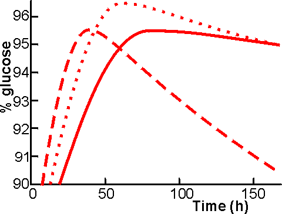

Enzyme Technology
Production of glucose syrup
The liquefied starch at 8 -12 DE is suitable for
saccharification to produce syrups with DE values of from 45 to 98 or more. The
greatest quantities produced are the syrups with DE values of about 97. At
present these are produced using the exoamylase, glucan 1,4-a-glucosidase
(1,4-a-D-glucan
glucohydrolase, commonly called glucoamylase but also called
amyloglucosidase and g-amylase), which releases b-D-glucose from 1,4-a-, 1,6-a-
and 1,3-a-linked glucans. In theory, carefully liquefied starch at
8 -12 DE can
be hydrolysed completely to produce a final glucoamylase reaction mixture with
DE of 100 but, in practice, this can be achieved only at comparatively low
substrate concentrations. The cost of concentrating the product by evaporation
decrees that a substrate concentration of 30% is used. It follows that the
maximum DE attainable is 96 - 98 with syrup composition 95 - 97% glucose, 1 - 2%
maltose and 0.5 - 2% (w/w) isomaltose (a-D-glucopyranosyl-(1,6)-D-glucose). This
material is used after concentration, directly for the production of
high-fructose syrups or for the production of crystalline glucose.
Whereas liquefaction is usually a continuous process,
saccharification is most often conducted as a batch process. The glucoamylase
most often used is produced by Aspergillus niger strains. This has a pH optimum
of 4.0 - 4.5 and operates most effectively at 60°C, so liquefied starch must be
cooled and its pH adjusted before addition of the glucoamylase. The cooling must
b rapid, to avoid retrogradation (the formation of intractable insoluble
aggregates of amylose; the process that gives rise to the skin on custard). Any
remaining bacterial a-amylase will be inactivated when the pH is lowered;
however, this may be replaced later by some acid-stable a-amylase which is
normally present in the glucoamylase preparations. When conditions are correct
the glucoamylase is added, usually at the dosage of 0.65 - 0.80 litre enzyme
preparation.tonne−1 starch (200 U kg−1). Saccharification is normally conducted
in vast stirred tanks, which may take several hours to fill (and empty), so time
will be wasted if the enzyme is added only when the reactors are full. The
alternatives are to meter the enzyme at a fixed ratio or to add the whole dose
of enzyme at the commencement of the filling stage. The latter should give the
most economical use of the enzyme.

Figure 4.3. The % glucose formed from 30% (w/w) 12 DE
maltodextrin, at 60°C and pH 4.3, using various enzyme solutions. ———200 U kg−1
Aspergillus niger glucoamylase; -----------400 U kg−1 A. niger glucoamylase;
········· 200 U kg−1 A. niger glucoamylase plus 200 U kg−1
Bacillus acidopullulyticus
pullulanase. The relative improvement on the addition of pullulanase is even
greater at higher substrate concentrations.
The saccharification process takes about 72 h to complete
but may, of course, be speeded up by the use of more enzyme. Continuous
saccharification is possible and practicable if at least six tanks are used in
series. It is necessary to stop the reaction, by heating to 85°C for 5 min,
when a maximum DE has been attained. Further incubation will result in a fall in
the DE, to about 90 DE eventually, caused by the formation of isomaltose as
accumulated glucose re-polymerises with the approach of thermodynamic
equilibrium (Figure 4.3).
The saccharified syrup is filtered to remove fat and
denatured protein released from the starch granules and may then be purified by
passage through activated charcoal and ion-exchange resins. It should be
remembered that the dry substance concentration increases by about 11 % during
saccharification, because one molecule of water is taken up for each glycosidic
bond hydrolysed (molecule of glucose produced).
Although glucoamylase catalyzes the hydrolysis of
1,6-a-linkages, their breakdown is slow compared with that of 1,4-a-linkages
(e.g., the rates of hydrolysing the 1,4-a,
1,6-a and 1,3-a-links in
tetrasaccharides are in the proportions 300 : 6 : 1). It is clear that the use
of a debranching enzyme would speed the overall saccharification process but,
for industrial use such an enzyme must be compatible with glucoamylase. Two
types of debranching enzymes are available: pullulanase, which acts as an exo
hydrolase on starch dextrins; and isoamylase (EC.3.2.1.68), which is a true
endohydrolase. Novo Industri A/S have recently introduced a suitable
pullulanase, produced by a strain of Bacillus acidopullulyticus. The pullulanase
from Klebsiella aerogenes which has been available commercially to some time is
unstable at temperatures over 45°C but the B. acidopullulyticus enzymes can be
used under the same conditions as the Aspergillus glucoamylase (60°C, pH
4.0-4.5). The practical advantage of using pullulanase together with
glucoamylase is that less glucoamylase need be used This does not in itself give
any cost advantage but because less glucoamylase is used and fewer branched
oligosaccharides accumulate toward the end of the saccharification, the point at
which isomaltose production becomes significant occurs at higher DE (Figure
4.3). It follows that higher DE values and glucose contents can be achieved when
pullulanase is use (98 - 99 DE and 95 - 97% (w/w) glucose, rather than 97 - 98 DE) and
higher substrate concentrations (30 - 40% dry solids rather than 25 - 30%) may be
treated. The extra cost of using pullulanase is recouped by savings in
evaporation and glucoamylase costs. In addition, when the product is to be used
to manufacture high-fructose syrups, there is a saving in the cost of further
processing.
The development of the B. acidopullulyticus pullulanase is
an excellent example of what can be done if sufficient commercial pull exists
for a new enzyme. The development of a suitable a-D-glucosidase, in order to
reduce the reversion, would be an equally useful step for industrial glucose
production. Screening of new strains of bacteria for a novel enzyme of this type
is a major undertaking. It is not surprising that more details of the screening
procedures used are not readily available.
Home
| Back | Next
This page was established in 2004 and last updated by Martin
Chaplin
on
6 August, 2014
|